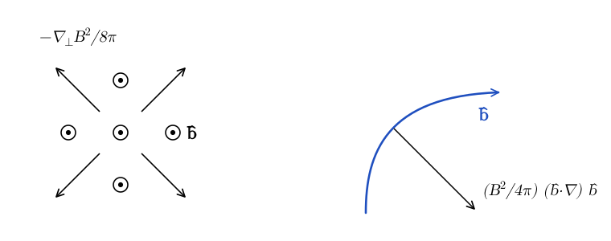
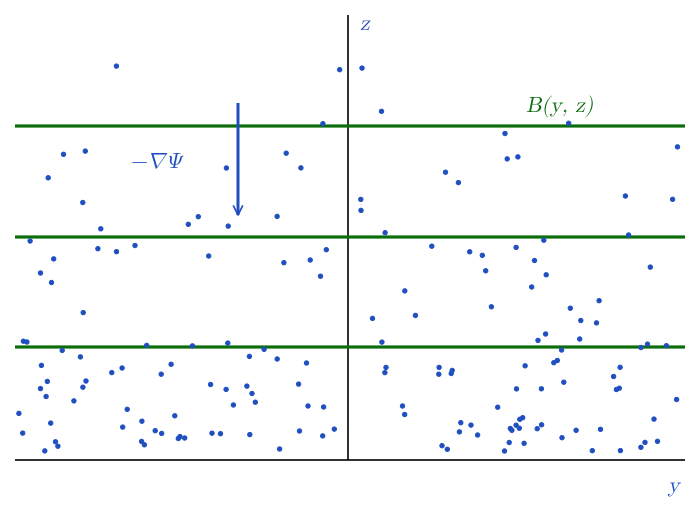
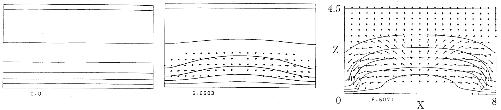
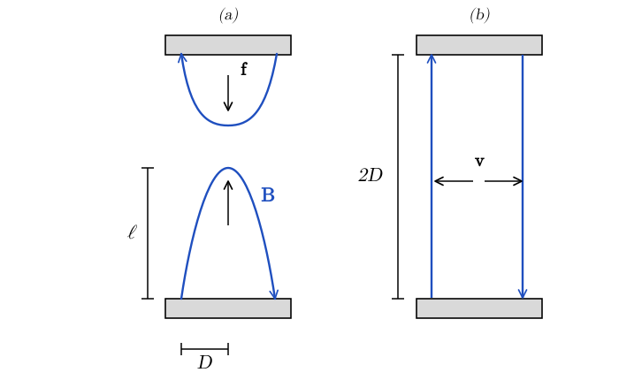

25 Magnetic Tension and Hydromagnetic Equilibria
Up to now we have been primarily concerned with the consequences of the induction equation (Faraday’s law). We have seen that, in the ideal-MHD limit, the magnetic field lines are frozen in the flow and explored some of the consequences of this fact. Now, we consider the feedback of the magnetic field on the plasma, that is the impact of the \(\mathbf{j} \times \mathbf{B}\) term in the momentum equation.
25.1 Magnetic Tension Force
A first somewhat obvious, but important remark is that the magnetic force \(\mathbf{j} \times \mathbf{B}\) is always perpendicular to the magnetic field. In other words, there is no impediment to the plasma flow along field lines. On the other hand, the field might resist or drive plasma motion perpendicular to the field lines. The latter, in turn, causes the field lines to move, in accordance with the induction equation. It is important to keep this in mind, because we are now going to rewrite the Lorentz force in a form in which this constraint is not manifest. Using the vector identity \[ \nabla (\mathbf{A} \cdot \mathbf{B}) =\mathbf{A} \times (\nabla \times \mathbf{B}) +\mathbf{B} \times (\nabla \times \mathbf{A}) + (\mathbf{A} \cdot \nabla) \mathbf{B}+ (\mathbf{B} \cdot \nabla) \mathbf{A} \tag{25.1}\] and Ampere’s law (\(4 \pi \mathbf{j}= \nabla \times \mathbf{B}\)), we can rewrite the Lorentz force as \[ \mathbf{j} \times \mathbf{B}= \frac{(\nabla \times \mathbf{B}) \times \mathbf{B}}{4 \pi} = \frac{(\mathbf{B} \cdot \nabla) \mathbf{B}}{4 \pi} - \nabla \frac{B^2}{8 \pi} . \tag{25.2}\] The second term is often improperly referred to as the magnetic pressure, because it is reminiscent of the \(- \nabla p\) term in the momentum equation, while the first term is improperly referred to as magnetic tension. However, remember that magnetic pressure is only effective perpendicular to the field lines, as we have already remarked. To better understand the nature of the Lorentz force in MHD, we factor \[ \mathbf{B}= B \hat{\mathbf{b}}, \tag{25.3}\] where \(\hat{\mathbf{b}}\) is a unit vector. Accordingly, we can write \[ \begin{aligned} (\mathbf{B} \cdot \nabla) \mathbf{B} &= B (\hat{\mathbf{b}} \cdot \nabla) (B \hat{\mathbf{b}}) \\ &= B^2 (\hat{\mathbf{b}} \cdot \nabla) \hat{\mathbf{b}} + B \hat{\mathbf{b}} (\hat{\mathbf{b}} \cdot \nabla) B \\ &= B^2 (\hat{\mathbf{b}} \cdot \nabla) \hat{\mathbf{b}} + \frac{1}{2} \hat{\mathbf{b}} (\hat{\mathbf{b}} \cdot \nabla) B^2 . \end{aligned} \tag{25.4}\] The last term on the RHS is, apart from a factor 2, the projection of \(\nabla B^2\) parallel to \(\mathbf{B}\): \[ [\hat{\mathbf{b}} (\hat{\mathbf{b}} \cdot \nabla) B^2]_i = \sum_{j = 1}^3 \hat{b}_i \hat{b}_j \partial_j (B^2) = [(\hat{\mathbf{b}} \otimes \hat{\mathbf{b}}) \nabla (B^2)]_i = : \nabla_{\parallel} B^2 . \tag{25.5}\] Plugging this back into Equation 25.2 yields \[ \mathbf{j} \times \mathbf{B}= \frac{B^2}{4 \pi} (\hat{\mathbf{b}} \cdot \nabla) \hat{\mathbf{b}} - [\mathbf{I}- \hat{\mathbf{b}} \otimes \hat{\mathbf{b}}] \frac{\nabla B^2}{8 \pi} = \frac{B^2}{4 \pi} (\hat{\mathbf{b}} \cdot \nabla) \hat{\mathbf{b}} - \nabla_{\perp} \frac{B^2}{8 \pi} . \tag{25.6}\] The last term is the component of \(\nabla (B^2 / 8 \pi)\) perpendicular to the field lines. This is the correct form of the magnetic pressure, while the first term on the RHS is the proper form of the magnetic tension.
We remark that \(u_B = B^2 / 8 \pi\) is the energy in the magnetic field, so the magnetic pressure force is \[ p_B = (\Gamma_B - 1) u_B, \tag{25.7}\] with an effective adiabatic index \(\Gamma_B = 2\). For ionized hydrogen \(\Gamma = 5 / 3\), so magnetic energy is more effective at resisting compression than gas internal energy. Of course, magnetic pressure can only resist compression perpendicular to the field lines.
To understand the meaning of the first term on the RHS of Equation 25.6, note that \[ (\hat{\mathbf{b}} \cdot \nabla) \hat{\mathbf{b}} =\boldsymbol{\kappa}, \tag{25.8}\] where \(1 / | \boldsymbol{\kappa} |\) is the curvature radius of the field lines. That is \(\boldsymbol{\kappa}= 0\) for straight field lines. For a circular field line, \(1 / | \boldsymbol{\kappa} |\) is the radius of the circle spanned by the line. This means that the magnetic field lines back-react on the plasma as if they were elastic springs with spring constant \(B^2 / 4 \pi\).
Summarizing, we find that there are two components of the Lorentz force. The first is the magnetic pressure, according to which the magnetic field lines resist being bundled together. The second is the magnetic tension, according to which the magnetic field lines resist bending. This situation is illustrated in Figure 25.1.

As we have already anticipated (see Equation 23.22), the Lorentz force can be rewritten as the divergence of the magnetic stresses: \[ \frac{(\mathbf{B} \cdot \nabla) \mathbf{B}}{4 \pi} - \nabla \frac{B^2}{8 \pi} = \nabla \cdot \left[ \frac{\mathbf{B} \otimes \mathbf{B}}{4 \pi} - \frac{B^2}{8 \pi} \mathbf{I} \right] =: \nabla \cdot \mathbf{T}_{\operatorname{EM}} . \tag{25.9}\] The derivation is conceptually simple, although it requires some tedious vector calculus calculations. Including both fluid \(\mathbf{T}\) and magnetic stresses, the Euler equation reads: \[ \rho \frac{\mathrm{d} \mathbf{v}}{\mathrm{d} t} = \nabla \cdot [\mathbf{T}+\mathbf{T}_{\operatorname{EM}}] . \tag{25.10}\] For an ideal fluid \(\mathbf{T}= - p\mathbf{I}\), however shear and bulk viscosity can also be included in \(\mathbf{T}\) to obtain the viscous MHD equations. In conservation form, the momentum equation reads \[ \frac{\partial (\rho \mathbf{v})}{\partial t} + \nabla \cdot [\rho \mathbf{v} \otimes \mathbf{v}-\mathbf{T}-\mathbf{T}_{\operatorname{EM}}] = 0, \tag{25.11}\] where \(\mathbf{R}= - \rho \mathbf{v} \otimes \mathbf{v}\) are the Reynolds stresses or inertial forces1.
25.2 Hydromagnetic Equilibria
Consider the hydrostatic equilibrium of a plane-parallel, magnetized atmosphere in a vertical gravitational potential \(\Psi\), as illustrated in Figure 25.4. This equilibrium configuration could be representative of the disk in a spiral galaxy, or of the photo-sphere of the Sun.

The force-balance equation for hydromagnetic equilibrium is \[ - \nabla p - \rho \nabla \Psi + \frac{1}{4 \pi} (\nabla \times \mathbf{B}) \times \mathbf{B}= 0. \tag{25.13}\] We will make two simplifying assumptions.
The gas is isothermal, so \(p = a^2 \rho\). This means that, in absence of magnetic fields, \[ \rho (z) = \tilde{\rho} \exp (- \Psi / a^2) . \tag{25.14}\]
We assume that the magnetic field is planar and does not depend on \(x\), meaning that \[ \mathbf{B}= B_y (y, z) \hat{\mathbf{y}} + B_z (y, z) \hat{\mathbf{z}} . \tag{25.15}\] This means that there exist a vector potential \(\mathbf{A}= A (y, z) \hat{\mathbf{x}}\) such that \(\nabla \times \mathbf{A}=\mathbf{B}\). In particular, \[ B_y = \partial_z A, \quad B_z = - \partial_y A \qquad \Longleftrightarrow \qquad \mathbf{B}= \nabla A \times \hat{\mathbf{x}} . \tag{25.16}\] Note that \(\mathbf{A} \perp \mathbf{B}\) and \(\mathbf{A}= \operatorname{const}\) on the magnetic field lines, so the isocontours of \(A (y, z)\) are the field lines.
To compute the Lorentz force we use \[ \nabla \times \mathbf{B}= \nabla \times (\nabla \times \mathbf{A}) = - \nabla^2 \mathbf{A}+ \nabla (\nabla \cdot \mathbf{A}) = - \hat{\mathbf{x}} \nabla^2 A. \tag{25.17}\] and \[ (\nabla \times \mathbf{B}) \times \mathbf{B}= - (\nabla^2 A) \hat{\mathbf{x}} \times (- \hat{\mathbf{x}} \times \nabla A) = - (\nabla^2 A) \nabla A. \tag{25.18}\] For reasons that will be more clear later, we rewrite \[ \nabla p + \rho \nabla \Psi = e^{- \Psi / a^2} \nabla q, \qquad q = pe^{\Psi / a^2} . \tag{25.19}\] The force equation finally reduces to \[ \boxed{- \frac{1}{4 \pi} (\nabla^2 A) \nabla A = e^{- \Psi / a^2} \nabla q.} \tag{25.20}\] The last equation shows that \(\nabla q \parallel \nabla A\), which means that \(q = q (A)\). One can then find equilibrium configuration by specifying \(q = q (A)\), which encodes the amount of matter enclosed by the field lines \(A\) and \(A + \mathrm{d} A\), and solving the resulting equation for \(A\). We shall not follow this line of reasoning here, instead we will make two more simplifying assumption, following Parker (1966).
We assume that the magnetic field lines are parallel, \(\mathbf{B}= B (z) \hat{\mathbf{y}}\).
We assume that the ratio of gas to magnetic pressure is constant \[ \frac{B^2}{8 \pi p} = \alpha_0 . \tag{25.21}\]
With these simplifications, the equation for equilibrium becomes \[ (1 + \alpha_0) \frac{\mathrm{d} p}{\mathrm{d} z} = - \frac{p}{a^2} \frac{\mathrm{d} \Psi}{\mathrm{d} z} . \tag{25.22}\] Apart from the additional factor \(\alpha_0\), this is the usual equation for hydrostatic equilibrium of a plane-parallel isothermal atmosphere. The solution is \[ p (z) = p_0 \exp \left( - \frac{\Psi (z)}{(1 + \alpha_0) a^2} \right), \qquad B (z) = B_0 \exp \left( - \frac{\Psi (z)}{2 (1 + \alpha_0) a^2} \right) . \tag{25.23}\] Remarkably, this solution turns out to be unstable for any \(\alpha_0 > 0\) to long-wavelength perturbations, the so-called Parker instability (Parker 1966). This is demonstrated in the MHD simulations shown in Figure 25.5.

Imagine starting from a plane parallel field, like in the left-most panel in the figure, and adding a small bend to the field lines. The fluid elements in the region with inclined field lines (solid lines in the figure) are still supported by the thermal pressure, but the magnetic pressure they experience is diminished, since the magnetic pressure can only act perpendicular to the field lines. As a result, they slide along the field lines and gain gravitational potential energy in the process. This is shown in the middle panel (the arrows denote the fluid velocity). As the mass loading on the field line decreases, its central part, which is still parallel to the \(y\)-axis, finds itself with higher pressure than the surrounding and starts to raise. This instability is responsible, for example, for the emergence of flux tubes from the Solar photo-sphere, giving rise to the type of prominence we have discussed previously.
In the case of the Solar corona, the field lines at the foot of the prominences are anchored in the outer convection layers of the Sun. The motion of plasma in this region moves the field lines in random ways and builds enormous tension in the field. When field lines of opposite polarities find themselves sufficiently close they can annihilate in a so-called reconnection event. This suddenly releases the magnetic tension and generates Solar flares and coronal mass ejections. Solar eruptions can significantly impact satellites and space communication and can be hazardous for astronauts. The prediction of Solar eruptions using ground- and space-based observations, in conjunction with MHD simulations, is a field of its own: space weather modeling.
25.3 In-class worksheet
Explosive Reconnection. Plasma is contained in a region bounded by two perfectly conducting plates. Two magnetic flux tubes are anchored on the plates and stretched by the application of an external force \(\mathbf{f}\) as shown in panel (a) of Figure 25.6.

When \(\ell \approx D\), the field lines reconnect and snap to a new configuration shown in panel (b). This process releases energy stored in the magnetic tension of the field to accelerate the plasma to a velocity \(\mathbf{v}\), which reaches a maximum when the field lines are perfectly straight. Assume that the ideal-MHD approximation holds at all times, except when reconnection takes place.
Show that, apart from geometric factors of order unity, the force per unit volume necessary to hold the field lines in place with \(\ell \approx D\) is \[ | \mathbf{f} | \approx \frac{B^2}{4 \pi} \frac{\ell}{D^2} . \tag{25.24}\]
Show that the maximum velocity of the plasma after the reconnection event is \[ v \approx v_A, \tag{25.25}\] where \(v_A\) is the Alfvén velocity \[ v_A = \frac{B}{\sqrt{4 \pi \rho}} . \tag{25.26}\]
25.4 Further reading
- Clarke and Carswell (2007), Chapter 13 (plasmas).
Note that these are not real forces, they only appear due to the difference between the Eulerian and Lagrangian frames.↩︎